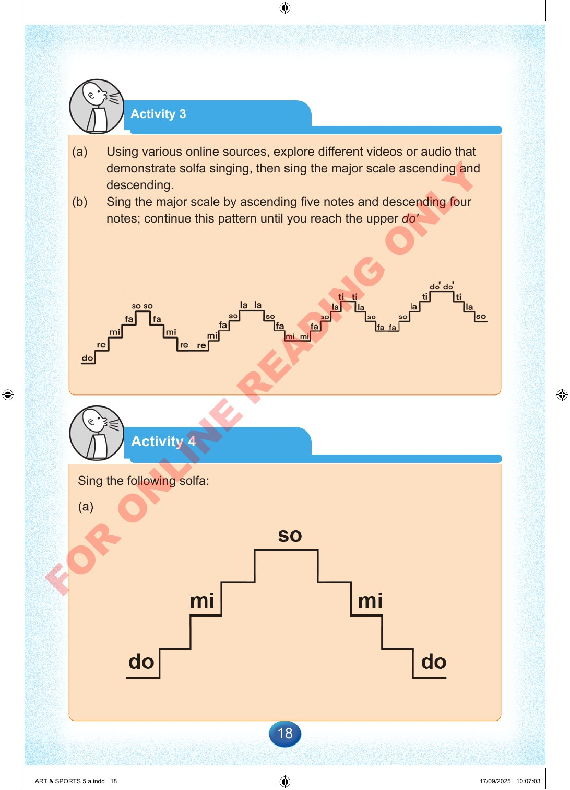

18
Activity
3
(a)
Using
various
online
sources,
explore
different
videos
or
audio
that
demonstrate
solfa
singing,
then
sing
the
major
scale
ascending
and
descending.
(b)
Sing
the
major
scale
by
ascending
five
notes
and
descending
four
notes;
continue
this
pattern
until
you
reach
the
upper
do'
Activity
4
Sing
the
following
solfa:
ART
&
SPORTS
5
a.indd
18
ART
&
SPORTS
5
a.indd
18
17/09/2025
10:07:03
17/09/2025
10:07:03
F
O
R
O
N
L
I
N
E
R
E
A
D
I
N
G
O
N
L
Y